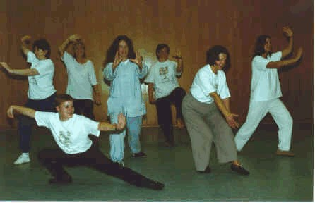

Wednesday, May the 25th, 2005
back to: title, date or indexes
Here, for your edification and instruction, is a translation of the War Song of the Huitznahuac, taken from Rig Veda Americanus, Sacred Songs of the Ancient Mexicans, number eight in Brinton's Library of Aboriginal American Literature, edited by D G Brinton (1890):
1. What ho! my work is in the hall of arms, I listen to no mortal, nor can any put me to shame, I know none such, I am the Terror, I know none other, I am where war is, my work is said to be in the hall of arms, let no one curse my children.
2. Our adornment comes from out the south, it is varied in colour as the clothing of the eagle.
3. Ho! ho! abundance of youths doubly clothed, arrayed in feathers, are my captives, I deliver them up, I deliver them up, my captives arrayed in feathers.
4. Ho! youths for the Huitznahuac, arrayed in feathers, these are my captives, I deliver them up, I deliver them up, arrayed in feathers, my captives.
5. Youths from the south, arrayed in feathers, my captives, I deliver them up, I deliver them up, arrayed in feathers, my captives.
6. The god enters, the Huitznahuac, he descends as an example, he shines forth, he shines forth, descending as an example.
7. Adorned like us he enters as a god, he descends as an example, he shines forth, he shines forth, descending as an example.
An adaptation of this song, with slightly amended words, wassailed to the tune of Carry On, Wayward Son by stadium rockers Kansas, has been heard around Hooting Yard every day for the past couple of months, ever since Pansy Cradledew became an Adept of Goon Fang. Often confused with the traditional martial arts of the East, Goon Fang is—as David Bowie once said so regrettably—“a completely different kettle of poisson”. I asked Pansy to explain for readers what it means to be an Adept of this ancient mystic art. She scribbled a few words on the discarded wrapper of a toffee apple, as follows:
It is not without reason that Goon Fang is shrouded in mystery, for when the powers of both Goon and Fang are combined, the Adept enters the Plane of VerEecke, a state of being both terrifying and a bit frightening. If I tell you anything more, my Goon energy will be dissipated and my Fang plasma will curdle. The plasma is of course invisible, and mighty, but should it curdle the very stars in their heavens will explode, so I am keeping mum for the time being.
Pansy agreed, however, to share with us this photograph of a Goon Fang workshop held in a secret location:

Hooting Yard on the Air, May the 25th, 2005 : “Nine Years Ago” (starts around 23:03)
Hooting Yard on the Air, December the 20th, 2006 : “Pansy the Adept” (starts around 00:14)